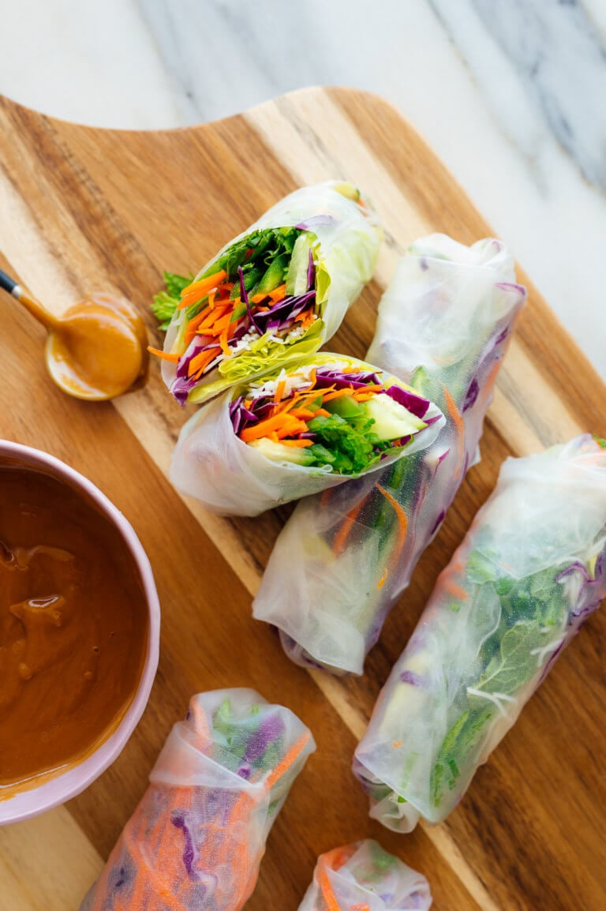

Spring Rolls

Rock and Roll with Spring Rolls
Spring Rolls is called "Goi Cuon" in Vietnamese. These tasty little rice paper rolls are
indeed an herby salad mixture, with pork, shrimp, and rice noodles. Dip it in as much sauce
(or should we say salad dressing) as you’d like. I love gỏi cuốn–they’re tasty and fun to eat.
They’re great as a communal meal where everyone is rolling their own at the table.
Ingredients
Spring Rolls
- 2 ounces rice vermicelli
- 1 tsp toasted sesame oil
- 1/4 tsp fine sea salt
- 1 cup torn butter lettuce
- 1 cup thinly sliced red cabbage
- 2 medium carrots
- 2 Persian (mini) cucumbers
- 2 medium jalapeños
- 1/4 cup thinly sliced green onions
- 1/4 cup roughly chopped fresh cilantro
- 1/4 cup roughly chopped fresh mint
- 8 sheets rice paper (spring roll wrappers)
Peanut Sauce
- 1/3 cup creamy peanut butter
- 2 tbsp rice vinegar
- 2 tbsp reduced-sodium tamari or soy sauce
- 1 tbsp toasted sesame oil
- 2 cloves garlic, pressed or minced
- 2 to 3 tbsp water
Steps
-
To make the spring rolls: Bring a pot of water to boil and cook the noodles just until al
dente, according to package directions. Drain, rinse them under cool water, and return them
to the pot. Off the heat, toss the noodles with the sesame oil and salt, and set aside.
-
Fill a shallow pan (a pie pan or 9″ round cake pan works great) with an inch of water. Fold
a lint-free tea towel in half and place it next to the dish. Make sure your prepared
fillings are within reach. Combine the green onion, cilantro and mint in a small bowl, and
stir.
-
Place one rice paper in the water and let it rest for about 20 seconds, give or take. You’ll
learn to go by feel here—wait until the sheet is pliable but not super floppy. Carefully lay
it flat on the towel.
-
Leaving about 1 inch of open rice paper around the edges, cover the lower third of the paper
with a few pieces of butter lettuce, followed by a small handful of rice noodles, some
cabbage, and a few strips of carrot, cucumber and jalapeño. Sprinkle generously with the
herb mix.
-
Fold the lower edge up over the fillings, rolling upward just until the filling is compactly
enclosed. Fold over the short sides like you would to make a burrito. Lastly, roll it up.
Repeat with the remaining ingredients.
-
To make the peanut sauce: In a small bowl, whisk together the peanut butter, rice vinegar,
tamari, honey, sesame oil, and garlic. Whisk in 2 to 3 tablespoons water, as needed to make
a super creamy but dip-able sauce.
-
Serve the spring rolls with peanut sauce on the side. You can serve them whole, or sliced in
half on the diagonal with a sharp chef’s knife.